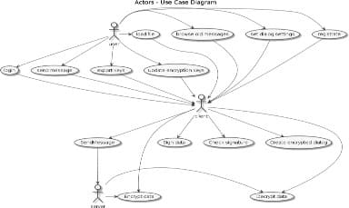
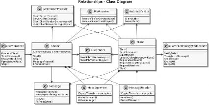
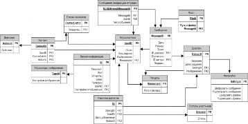

УДК 004.056
Донецкий национальный технический университет, г. Донецк кафедра программной инженерии
alla@donntu.org olleg1996@mail.ru
Аннотация
Грищенко О.С., Чернышова А.В. Защита информации в приложениях для мгновенной передачи сообщений. Представлен обзор существующих месенджеров, поддерживающих защиту на уровне сообщений, сформированы требования к авторской программе-месенджеру. Проведено проектирование и реализация авторской программы-месенджера.
Ключевые слова: месенджер, шифрование, криптографический протокол, защита данных.
Источник: Грищенко, О. С. Защита информации в приложениях для мгновенной передачи сообщений / О. С. Грищенко, А. В. Чернышова // Информатика, управляющие системы, математическое и компьютерное моделирование (ИУСМКМ-2017) : Сборник материалов VIII Международной научно-технической конференции в рамках III Международного Научного форума Донецкой Народной Республики, Донецк, 25 мая 2017 года / Редколлегия: Ю.К. Орлов [и др.]. – Донецк: Донецкий национальный технический университет, 2017. – С. 115-119. – EDN KKRGJS.
Chatsecure [1] – приложение для обмена мгновенными сообщениями с поддержкой шифрования. Реализован для iOS и Android (более не поддерживается). Разработчиком является GuardianProject. Шифрование
обеспечивается с помощью протокола OTR (Off-the-Record)[2]. Передача сообщений осуществляется по протоколу XMPP[3]. ChatSecure не сохраняет отправленные сообщения в памяти устройства. ChatSecure также позволяет организовывать групповые чаты. Приложение позволяет передавать мультимедиа-сообщения, фотографии и файлы. ChatSecure является бесплатным open source проектом.
CryptoCat [4] – приложение для обмена мгновенными сообщениями с поддержкой шифрования. Является открытым. Может работать в браузерах Chrome, Firefox, Safari и Opera, а также в качестве отдельного клиента в Apple OS X и на iPhone. Использует шифрование данных через протокол OTR и передает зашифрованные данные по XMPP. Сообщения шифруются с помощью AES-256[5]. CryptoCat предоставляет пользователям возможность обмениваться документам и мультимедийными фалами (при этом файлы шифруются с помощью AES-256). Сообщения не хранятся и после окончания диалога удаляются автоматически в течение нескольких минут. При повторном входе в тот же диалог никто из участников не сможет просмотреть ранее отправленные сообщения. Файлы хранятся в течении 30 дней.
Telegram [6] – кроссплатформенный месенджер, позволяющий обмениваться текстовыми сообщениями и файлами размером до 1,5 Гб. Обеспечивает защиту данных с помощью протокола MTProto, который предполагает использование нескольких криптографических протоколов. При авторизации и аутентификации пользователя приложение используют алгоритмы RSA-2048[7] и Диффи-Хеллмана [8].Для шифрования сообщений использует AES. В режиме секретных чатов реализует end-to-end шифрование[9]. Также позволяет организовывать аудио и видео конференции.
Signal[10] позволяет обмениваться сообщениями и звонками с абонентами из телефонной книги мобильного устройства. Приложение предоставляет возможность отправлять переписки в архив. Приложение обеспечивает криптографическую защиту телефонных разговоров от прослушки, записи и перехвата. Для шифрования данных используется алгоритм AES с 256-битным ключом. Signal способно обеспечить шифрование голосовой связи на всем пути прохождения сигнала. Передача данных осуществляется через Wi-Fi подключение или мобильное соединение. Для защиты от прослушки на экране отображаются два случайных слова, которые должен повторить собеседник.
TextSecure[10] – месенджер для безопасной передачи мгновенных сообщений, файлов и мультимедиа данных. TextSecure использует открытый протокол Signal, который реализует end-to-end шифрование данных. Ключи, использующиеся для шифрования, хранятся только на устройстве пользователя. Для проверки подлинности собеседника предусмотрено ручное сравнения отпечатков ключей на устройствах, либо сканирование QR-кода. TextSecure предоставляет также возможность создания групповых чатов,
которые также шифруются. При этом серверы не имеют доступа к метаданным группы.
После анализа существующих защищенных месенджеров было принято решение о разработке нового месенджера с поддержкой защиты передаваемых данных. Основываясь на анализе механизмов защиты существующих продуктов, к разрабатываемому приложению были предъявлены следующие требования:
обеспечение надежного механизма согласования ключей;
шифрование всех передаваемых данных;
хранение сообщений в зашифрованном виде;
отсутствие доступа к передаваемым данным при передаче через
сервер;
проверка целостности сообщений.
На основе описанных требований было произведено проектирование разрабатываемой системы.
На рисунке 1 представлена диаграмма вариантов использования разрабатываемого приложения.

Рисунок 1 – Диаграмма вариантов использования.
Приложение использует собственнный протокол передачи данных. Для согласования ключей протокол использует алгоритм RSA. Для шифрования передаваемых данных используется алгоритм AES, для проверки целостности сообщений используется электронно-цифровая подпись. Протокол предполагает два уровня шифрования: шифрование канала между клиентом и сервером и шифрование передаваемых сообщений непосредственно между
клиентами. Таким образом, сообщения клиентов будут храниться на сервере в зашифрованном виде, а ключи для расшифровки сообщений будут находиться только на пользовательских компьютерах. На транспортном уровне используется протокол TCP.
Разрабатываемое приложение состоит из трех частей: клиента, сервера и библиотеки, инкапсулирующей работу с протоколом передачи данных.
На рисунке 2 представлен фрагмент диаграммы классов приложения, содержащий классы, обеспечивающие защиту и передачу данных, а также их основные методы и атрибуты.

Рисунок 2 - Фрагмент диаграммы классов.
Для серверной части приложения была разработана база данных и использованием СУБД MS SQL Server. Схема данных базы данных представлена на рисунке 3.
На данный момент приложение реализует следующую функциональность:
создание защищенных диалогов;
отправка зашифрованных сообщений с ЭЦП;
просмотр ранее отправленных сообщений;
передача зашифрованных файлов с ЭЦП;
защищенная авторизация и аутентификация пользователя;
обновление ключей шифрования диалога;
регистрация пользователя.

Рисунок 3 – Схема базы данных сервера.
проектирование программы-месенджера и реализация ее основной функциональности. В дальнейшем планируется расширить функциональность приложения возможностью организации защищенных групповых чатов, а реализовать защищенные аудио и видео звонки.
Сhatsecure// hatsecure.org [Электронный ресурс]. – Режим доступа: https://chatsecure.org/
Off-the-RecordMessaging// Википедия [Электронный ресурс]. – Режим доступа: https://ru.wikipedia.org/wiki/Off-the-Record_Messaging.
XMPP // Википедия [Электронный ресурс]. – Режим доступа: https://ru.wikipedia.org/wiki/XMPP
Cryptocat // crypto.cat [Электронный ресурс]. – Режим доступа: https://crypto.cat/
AdvancedEncryptionStandard// Википедия [Электронный ресурс]. – Режим доступа: https://ru.wikipedia.org/wiki/Advanced_Encryption_Standard.
Telegram // tlgrm.ru. [Электронный ресурс]. – Режим доступа: https://tlgrm.ru/techfaq
RSA // Википедия [Электронный ресурс]. – Режим доступа: https://ru.wikipedia.org/wiki/RSA
Протокол Диффи—Хеллмана// Википедия [Электронный ресурс]. – Режим доступа: https://ru.wikipedia.org/wiki/Протокол_Диффи_—_Хеллмана
End-to-endencryption// Википедия [Электронный ресурс]. – Режим доступа: https://en.wikipedia.org/wiki/End-to-end_encryption
Open whisper systems// whispersystems.org. [Электронный ресурс].– Режим доступа: https://whispersystems.org/